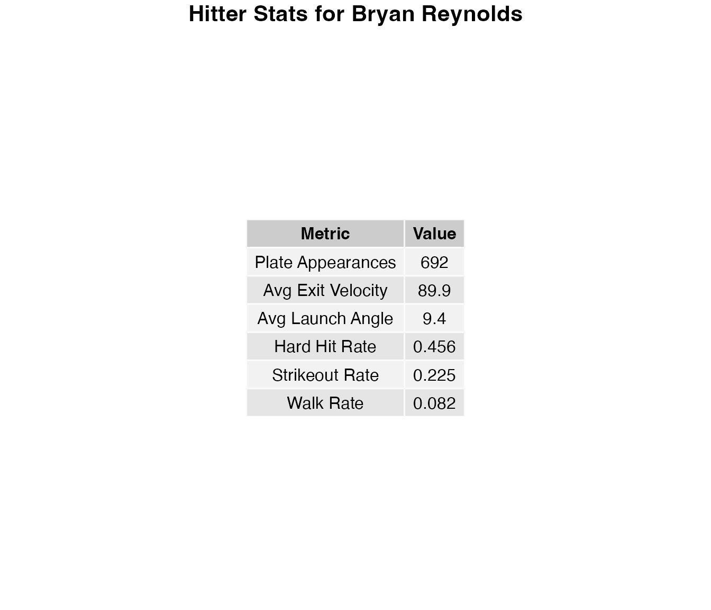
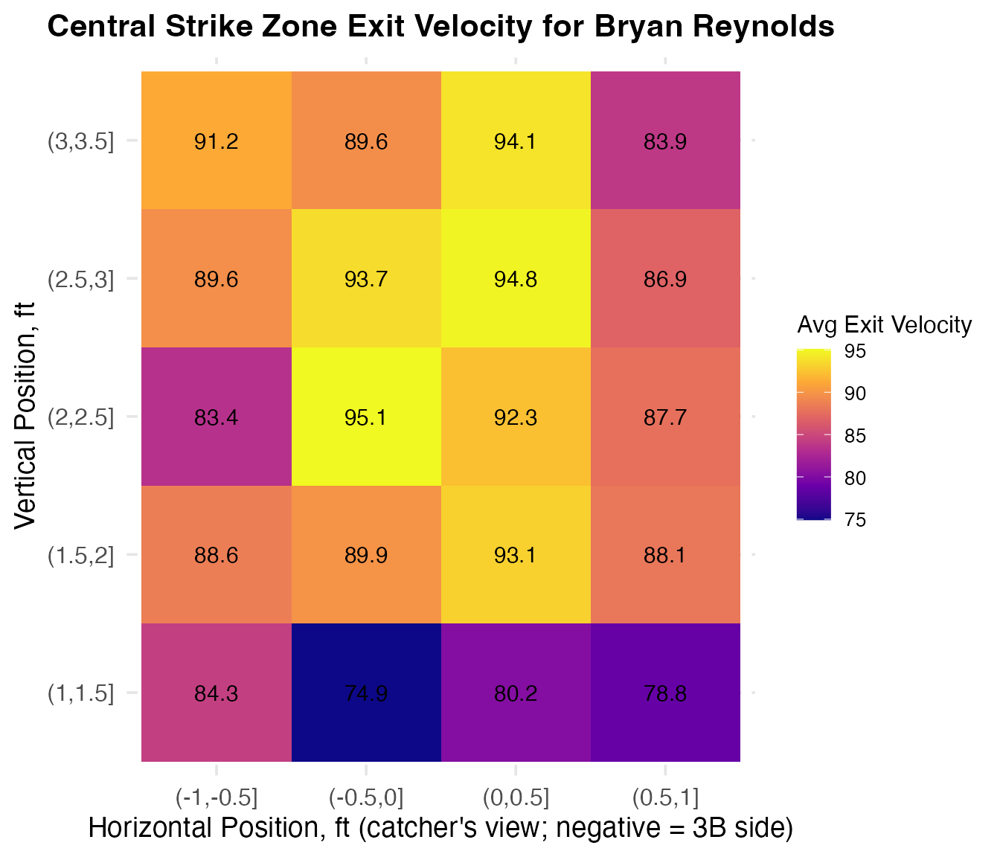
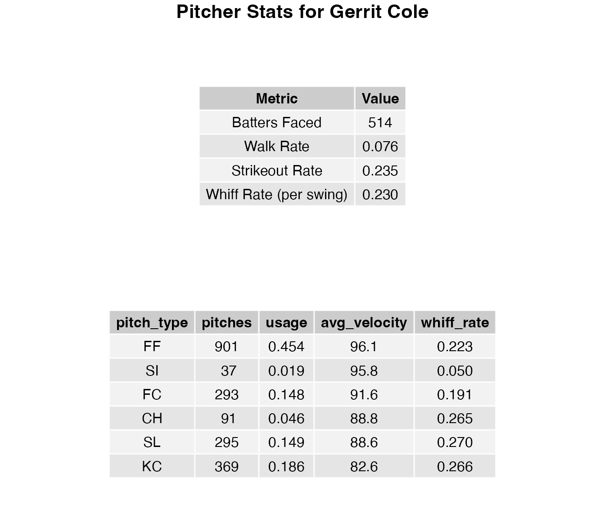
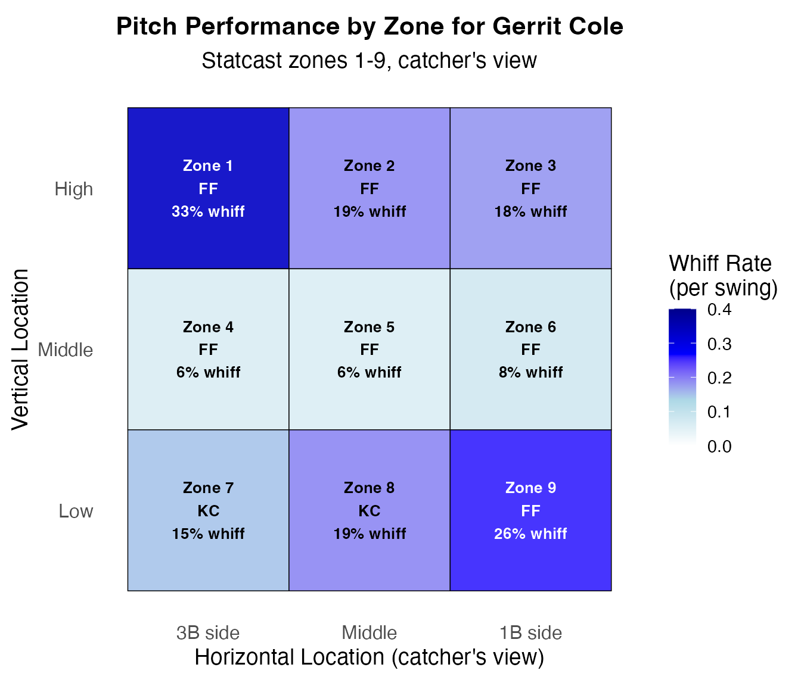

Baseball Scouting Package Overview
Source:vignettes/baseballscouting_home.Rmd
baseballscouting_home.RmdWelcome to baseballscouting
The baseballscouting package provides tools to explore
and analyze baseball data, helping you uncover where certain pitchers
and hitters excel—and where they don’t. Additionally, the package
includes simulation capabilities that allow you to predict outcomes of
matchups between pitchers and batters. This dual focus makes
baseballscouting an excellent toolkit for both baseball
enthusiasts and data analysts.
All data is downloaded live from Baseball Savant (Statcast)
and the MLB Stats API, so every example needs an internet connection.
The start_date and end_date arguments control
the data window. By default, regular-season and postseason games are
included and spring training is excluded; use the
game_types argument to change this.
What can you do with baseballscouting?
Analyze Performance Data
With baseballscouting, you can dive deep into baseball
statistics to:
- Identify where pitchers are most effective by analyzing their pitch locations and outcomes.
- Discover where hitters perform best by examining their success rates across different pitch types and locations.
By leveraging comprehensive data and powerful visualizations, you can uncover patterns and trends that would otherwise go unnoticed.
Example of Analyzing a Hitter with generate_hitter
Function
hitter_ids <- c(668804) # Bryan Reynolds
start_date <- "2024-01-01"
end_date <- "2024-12-31"
generate_hitter(player_ids = hitter_ids, start_date = start_date, end_date = end_date)

The first table shows the hitter’s plate appearances, average exit velocity (how fast the ball is hit), average launch angle of the ball, hard hit rate (percentage of batted balls hit 95 MPH or harder, among batted balls with a recorded exit velocity), strikeout rate and walk rate (strikeouts or walks divided by plate appearances).
The heatmap shows the average exit velocity of the batter across different areas of the strike zone, from the catcher’s point of view (negative horizontal values are on the third-base side). This can give valuable insights into where the hitter struggles and where they excel and give a pitcher a better idea of where to try to pitch them.
Example of Analyzing a Pitcher with generate_pitcher
Function
pitcher_ids <- c(543037) # Gerrit Cole
start_date <- "2024-01-01"
end_date <- "2024-12-31"
generate_pitcher(player_ids = pitcher_ids, start_date = start_date, end_date = end_date)

The first table shows the number of batters faced, the walk rate (walks, including intentional walks, divided by batters faced), the strikeout rate (strikeouts divided by batters faced) and the whiff rate. The second table breaks the pitcher’s arsenal down by pitch type: number of pitches, usage, average velocity and whiff rate.
The heatmap shows the whiff rate in each of the nine Statcast strike zones: how often batters swing and miss, as a proportion of the swings they take at pitches in that zone. Foul tips count as misses, which matches Baseball Savant’s Whiff%. Each tile is labeled with its zone number and the pitcher’s most-used pitch there. The plot is drawn from the catcher’s point of view: zone 1 is high on the third-base side (top-left) and zone 9 is low on the first-base side (bottom-right). If a pitcher generates more swings and misses then this is generally a good indicator that their pitches are moving and performing how they want.
If you pass several player IDs to generate_pitcher() or
generate_hitter(), each player gets their own report, and
the function returns a list of plots named by player ID.
Simulate Matchups
The package’s simulation tools allow you to model hypothetical matchups between pitchers and batters. These simulations take into account factors like:
- The pitcher’s and the batter’s outcome rates (strikeouts, walks, hits and outs) per plate appearance.
- The pitcher’s tendencies, pitch types, and locations.
- The hitter’s success rates against different pitches and locations.
For example, you can simulate 10,000 plate appearances between a specific pitcher and hitter to estimate likely outcomes such as strikeouts, walks, and hits. These insights can be used for strategy, analysis, or just for fun.
Example: Simulating an At-Bat
Here’s how you can use baseballscouting to simulate
matchups between a pitcher and a batter. Let’s see how Gerrit Cole might
fare against Mike Trout over a simulated series of plate appearances,
using their 2022 data. Setting seed makes the result
reproducible.
trout <- at_bat_sim(
pitcher_id = 543037, # Gerrit Cole
batter_id = 545361, # Mike Trout
start_date = "2022-04-01",
end_date = "2022-10-01",
num_simulations = 10000,
num_cores = 2,
seed = 42
)
trout
#> Outcome Probability
#> 1 strikeout 0.3593
#> 2 walk 0.0941
#> 3 single 0.0757
#> 4 double 0.0414
#> 5 triple 0.0016
#> 6 home_run 0.0903
#> 7 flyout 0.2381
#> 8 groundout 0.0995The output data frame contains two columns:
-
Outcome: The type of event (e.g., strikeout, walk, single, etc.). -
Probability: The share of simulated plate appearances that ended in that outcome. The probabilities sum to 1.
To see that the batter matters, here is the same pitcher against a much weaker 2022 hitter, Martín Maldonado:
maldonado <- at_bat_sim(
pitcher_id = 543037, # Gerrit Cole
batter_id = 455117, # Martín Maldonado
start_date = "2022-04-01",
end_date = "2022-10-01",
num_simulations = 10000,
num_cores = 2,
seed = 42
)
comparison <- data.frame(
Outcome = trout$Outcome,
`Cole vs. Trout` = trout$Probability,
`Cole vs. Maldonado` = maldonado$Probability,
check.names = FALSE
)
knitr::kable(comparison, digits = 3)| Outcome | Cole vs. Trout | Cole vs. Maldonado |
|---|---|---|
| strikeout | 0.359 | 0.383 |
| walk | 0.094 | 0.063 |
| single | 0.076 | 0.072 |
| double | 0.041 | 0.024 |
| triple | 0.002 | 0.000 |
| home_run | 0.090 | 0.046 |
| flyout | 0.238 | 0.216 |
| groundout | 0.100 | 0.196 |
Against the same pitcher, Trout walks more, hits for much more power and grounds out less, which reflects how the two hitters actually performed that season. This gives you an analytical view of how the matchup could play out based on the players’ historical data.
The inputs behind each simulation (the plate-appearance counts and
the batter, pitcher, league and combined rates) are stored in the
"matchup" attribute:
How the simulation works
Each simulated plate appearance goes through four steps:
- Sample a pitch. A pitch type is drawn from the pitcher’s mix of the pitches that ended plate appearances. A location is then drawn from a smoothed map (a 2D kernel density estimate) of where that pitch type was thrown. Pitch types with fewer than 30 such pitches use the map for all of the pitcher’s pitches.
-
Combine the batter, the pitcher and the league.
Each player’s rates for the eight outcomes are computed per plate
appearance. They are first shrunk toward the league average, as if each
player had 50 extra league-average plate appearances
(
prior_pa), so small samples don’t produce extreme values. The batter’s and the pitcher’s rates are then combined with the odds-ratio (generalized log5) method: an outcome gets more likely when both players are above league average at it. -
Adjust for pitch type and location. The
probabilities of a single, double, triple and home run are scaled by how
well this batter has done on that pitch type in that part of the zone,
relative to the batter’s overall hit rate. That rate is also shrunk
toward the batter’s average, so sparse areas have little effect, and the
adjustment is capped at between half and double
(
multiplier_range). If the batter has no data there, nothing changes: a missing bin never counts as a strikeout. - Repeat thousands of times in parallel. The outcome is drawn from the adjusted probabilities, and the results are tallied across all simulated plate appearances.
Main assumptions and limitations:
- Each plate appearance is decided by one sampled decisive pitch. The ball-strike count and pitch sequencing are not modeled.
- There are no park, handedness (platoon) or weather adjustments, beyond what is already reflected in each player’s own data for the window.
- The league baseline is an approximate constant MLB average
(strikeout 23%, walk 8%, single 15%, and so on), not a season-specific
value. You can supply your own with
league_rates. - Hit-by-pitch is counted as a walk, and catcher’s interference is left out.
- When both players are above league average at an outcome, the odds-ratio method predicts a rate above both of them. For example, Cole and Trout both struck out more than the league in 2022, so the simulated strikeout rate is higher than either player’s own rate.
Adjusting Parameters
You can adjust the number of simulations and cores for better performance:
- Increasing
num_simulationsprovides more accurate probabilities but takes longer to compute. - Increasing
num_coresutilizes more CPU cores for faster computation (useful for large simulations). With a fixedseed, the results are identical for any number of cores. -
prior_pa,location_prior_pa,multiplier_rangeandleague_ratescontrol the modeling choices described above. See?at_bat_simfor details.
Why baseballscouting?
The package combines the thrill of baseball analysis with robust statistical tools, empowering you to:
- Explore key insights about player performance.
- Simulate realistic game scenarios.
- Make data-driven decisions or simply enjoy a deeper understanding of the sport.
Notes
- Ensure that the pitcher and batter IDs are valid Statcast IDs.
- Parallel processing (
num_cores) may require additional setup on some systems (e.g., Windows). - A warning is shown when either player has fewer than 50 plate appearances in the chosen window; the simulation then relies mostly on league averages.
Get Started
To begin, install the package (code below) and start exploring! Here are some additional resources to guide you:
devtools::install_github("braeden-falzarano/baseballscouting")We’re excited to see what insights you uncover with
baseballscouting!